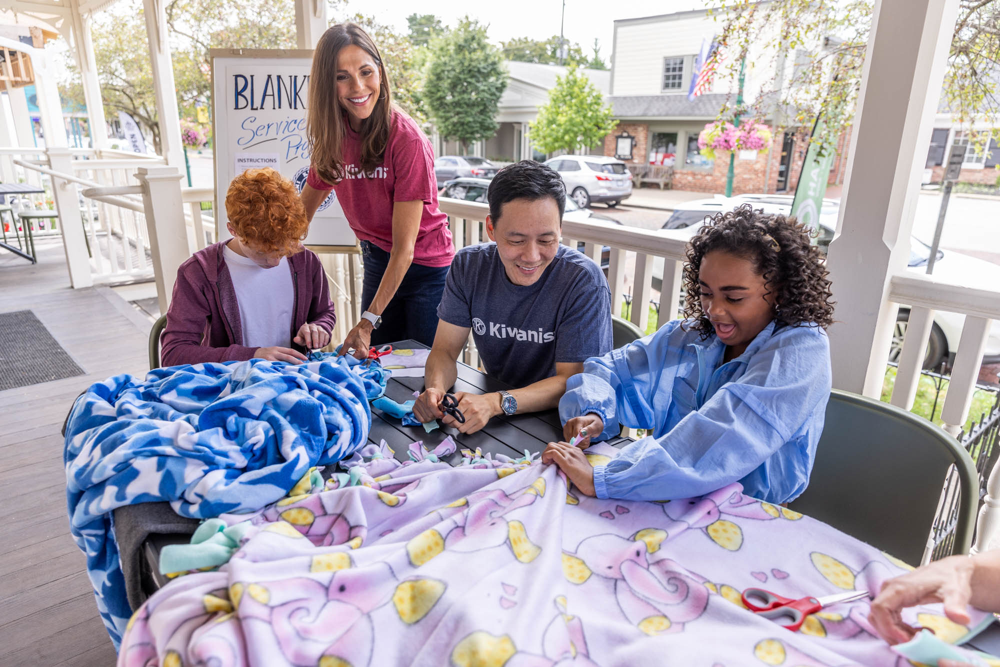
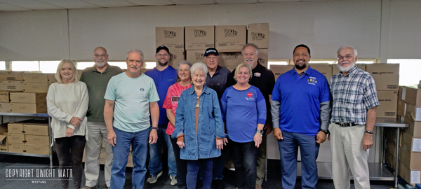

Welcome
We are Kiwanis Club of Fort Oglethorpe!
Contact or come join us every Friday at Park Place Restaurant to become a member and get involved in the community!
What we're up to
Kiwanis Kannonball Run 5K
Thank you to everyone who joined us for the Kannonball 5k this year. Check out the results below!
Results of the Kannonball 5k

Committed to changing the world, one child at a time.

Come see what we're all about!
About Kiwanis Club
Kiwanis Club is an organization dedicated to working towards the betterment of childrens lives in communities across the world. Kiwanis branches, such as this one, have hard working members who strive to make a difference in their local community.